CAIRN.Firmware manual.
Cairn is a MeshCore firmware with its own interface on the device. Read and send messages, find nodes, watch the radio, follow the map and change every setting from the screen, with or without a phone.
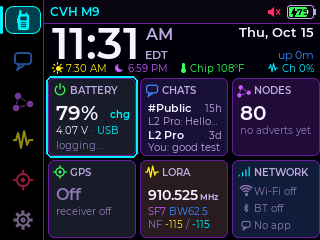
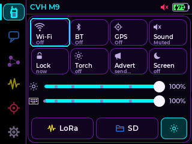
One firmware, many radios.
Cairn is a fork of the MeshCore companion firmware. Every board is built from one source tree that shares MeshCore's mesh and radio code, so every build still works with the official MeshCore apps on Android, iOS and the web.
What Cairn adds is the device itself: a screen you can run the mesh from. On the larger boards that is a full interface with a sidebar, cards and pages. On the small OLED and e-ink boards it is a compact page-by-page interface. Each build is numbered. The boot splash shows BUILD N, releases are tagged cairn-vN, and files are named MeshCore-<Board>-CairnN-<date>…, so you can match a device to a release from its own screen.
Four interfaces
Sidebar, Home dashboard, chats, nodes, radios, GPS with offline maps, settings as cards. Driven by touch, by keys, or both.
L2 Pro · Heltec V4 kit · ThinkNode M9 · T-DeckA native card interface for the 480×480 AMOLED, run from a 20-key phone keypad or touch.
LilyGO T-Display SF32Page by page on small OLED, e-ink and colour TFT screens, run from a joystick or one button.
Wio L1 Pro · DV1 · L1 e-ink · T096The standard MeshCore repeater with a minimal status, spectrum and settings screen.
T096 · T114 · Heltec V2–V4 · TrackersSupported boards
| Board | Screen and input | Interface | Status |
|---|---|---|---|
| Seeed Wio Tracker L2 Pro | 3.2" 320×240 touchscreen | Cairn touch | Tested |
| Heltec V4-R8 + Expansion Kit V2 | 2.8" touchscreen | Cairn touch | Tested |
| Elecrow ThinkNode M9 | 2.4" screen, QWERTY keyboard, d-pad, function keys | Cairn keys | Beta |
| LilyGO T-Deck / T-Deck Plus | 2.8" touchscreen, keyboard, trackball | Cairn touch and keys | Beta |
| LilyGO T-Display SF32 + keypad | 480×480 AMOLED touch, 20-key keypad | SF32 | Tested |
| Seeed Wio Tracker L1 Pro (OLED, DV1, e-ink) | SH1106 OLED, 2.42" SSD1309 OLED or 2.13" e-ink; joystick | Compact | Tested |
| Heltec Mesh Node T096 | 0.96" colour TFT, one button | Compact | Tested |
| Compact repeaters | T096, T114, Heltec V2, V3, V4, V4-R8, Wireless Tracker V1/V2 | Repeater | T096 beta Others untried |
About 30 more boards build from the same tree and sit in a separate, untested preview release (cairn-v107-preview). This manual covers the boards above.
How to read this manual
Most chapters describe the Cairn touch and key interface, which looks the same on the L2 Pro, the Heltec kit, the ThinkNode M9 and the T-Deck. Where the way you do something differs, the manual shows it side by side:
Touch
Tap, Hold, Swipe on the L2 Pro, the Heltec kit and the T-Deck's screen.
Keys · M9 / T-Deck
A focus ring marks the selected item. Keys are shown as OK BACK ←→↑↓ MSG @.
OLED boards
The joystick on the Wio L1 family, or the single button on the T096. See chapter 17.
Names in bold white are exactly what the screen shows. A path such as Settings › Radio › Scope means: open the Settings tab, tap the Radio card, then the Scope card. Screens in this manual were captured on real devices; each caption says which board and, where it matters, which build.
What Cairn 118 changes.
Cairn 118 moves Cairn onto MeshCore 1.18.0, fixes regions for messages you type on the device, adds delivery, resend, automatic retry, copy and paste to chats, lets alerts play your own sounds from the card, and gives the M9 and T-Deck a text box instead of an on-screen keyboard.
Cairn now runs on upstream MeshCore 1.18.0, with its fixes: a guard against malformed packets, scope code 0 read as no scope, and properly spaced ACKs on direct routes through repeaters.
Settings › Radio › Scope sets the default region, and each channel can have its own. Regional repeaters no longer drop what you type on the device. More
A direct message shows sending…, then two ticks, or not delivered with a red !. Resend sends it again as the same message. More
Off by default. Up to 3 sends by the path, then up to 2 floods, spaced over about two and a half minutes. More
Hold a message, tap Copy; any text field then offers Paste. More
A direct chat's ⋯ page shows the path, with Reset path and Find path. More
MP3 or WAV files in /Sounds on the card can replace the message, channel, advert, sent and startup tones. More
The device's own keys type into a tall text box. A slim strip holds Emoji, ?123, the bytes left and Send. More
→ from the message field jumps to the chat's ⋯. The ring now outlines a message's bubble. More
The GPS no longer stays silent after a restart, Quectel L76K units keep their GPS, and the clock sets itself from GPS again.
The battery reading no longer runs about 1 % high.
Tested so far
- T-Deck Plus (u-blox GPS): the GPS fix after boot and after GPS off/on, the new text box, typing, and a direct-message alert playing a chosen MP3 from the card.
- ThinkNode M9: the screens in this chapter's chat sections were captured on an M9 running 117 beta: delivery ticks, auto retry and not delivered.
- Built and unit-tested, not yet tried on hardware: a scoped message passing a regional repeater, paste, an L76K T-Deck, alert sounds on the L2 Pro, and the SF32 and Wio L1 sends.
Getting Cairn onto the board.
Each board family installs a different way. Updates keep your identity, contacts, channels and settings. A first install on an ESP32 board erases everything.
| You want to… | ESP32 boards | nRF52840 boards | T-Display SF32 |
|---|---|---|---|
| First install | -full.bin at 0x0, after a full erase | the board's .uf2 | the -install.zip: unzip, double-click |
| Update | online, Wi-Fi transfer, or -update.bin at 0x10000 | the board's .uf2 again | online, or the -install.zip again |
| Recover | -full.bin at 0x0, after a full erase | copy the .uf2 again | hold A for 12 s, run the installer again |
| Boards | L2 Pro, Heltec V4 kit, ThinkNode M9, T-Deck, Heltec repeaters | Wio L1 Pro, DV1, L1 e-ink, T096, T114 repeater | T-Display SF32 |
ESP32 boards: web flasher or esptool
Write the -full.bin or the -update.bin, never both. Coming from stock MeshCore, Meshtastic or the maker's firmware, use the -full.bin.
- Open Espressif's web flasher in Chrome or Edge (espressif.github.io/esptool-js) and click Connect. Pick the board's serial port.
- First install: click Erase Flash and wait. Set the address to
0x0, choose the-full.binand click Program.
Update: set the address to0x10000, choose the-update.binand click Program. Don't erase. - Click Disconnect, then tap Reset on the board.
The same with esptool v5 (pip install esptool):
# first install or recovery
esptool --chip esp32s3 erase-flash
esptool --chip esp32s3 -b 921600 write-flash 0x0 MeshCore-<Board>-CairnN-<date>-full.bin
# update
esptool --chip esp32s3 -b 921600 write-flash 0x10000 MeshCore-<Board>-CairnN-<date>-update.binDownload mode
| Board | How |
|---|---|
| Wio Tracker L2 Pro | hold User/Boot, tap RST, release User/Boot |
| Heltec V4 kit | hold PRG, tap RST, release PRG. Don't hold IO at the same time: IO is a strap pin. |
| ThinkNode M9 | automatic through its USB-serial chip; it has no Boot button. If it won't connect, replug the cable. On Windows, install WCH's CH340 driver if no COM port appears. |
| T-Deck / T-Deck Plus | usually automatic. If not: switch it off, hold the trackball in (it is BOOT), switch it on, release. |
nRF52840 boards: copy a UF2
- Connect the board with a data cable (charge-only cables are common).
- Double-tap Reset (RST on the T096). A USB drive appears.
- Copy the board's
.uf2onto the drive. The board reboots by itself when the copy finishes, and the drive disappears. - Check the splash: it shows BUILD N for the release you copied.
A good copy takes several seconds. If Finder stops with error -36 on a Mac, copy from Terminal instead: cp -X MeshCore-<Board>-CairnN-<date>.uf2 /Volumes/<drive>/. Copying never touches the bootloader, so a bad copy is fixed by copying again.
T-Display SF32: the installer
- Slide the power switch ON with the battery connected. With it off and only USB, the board restarts every 20 to 40 seconds once the flash tool takes over.
- Take the core off the keyboard and plug it into the computer with a USB-C data cable.
- Unzip
MeshCore-TDisplaySF32-CairnN-<date>-install.zipand runInstall on Mac.command,Install on Windows.bator./install-linux.sh. - Leave the board alone until the installer says Done.
On a Mac the installer needs Python 3 (xcode-select --install). The SF32's download mode is in the chip's ROM, so a failed install can always be run again.
Update over Wi-Fi from the board
On the L2 Pro, the Heltec kit, the M9, the T-Deck and the SF32 (docked on its keyboard, which carries the Wi-Fi chip):
- Join Wi-Fi: Settings › Connect › Wi-Fi.
- Open Settings › System › Firmware (the page is titled Firmware update) and tap Updates to check.
- When it reads Cairn N available, open it and tap Install.
The board downloads its own -update.bin over HTTPS and checks its size, SHA-256 and board marker before installing. The new build starts on trial and goes back to the old one by itself if it fails to start. While on Wi-Fi the board also checks once a day and shows a notice when a newer build is out. Nothing installs without your confirmation.
Wi-Fi transfer (from a browser)
Called Updater mode before Cairn 116. Use it to send a firmware file from a computer on the same network, and on the L2 Pro and T-Deck to add music or alert sounds to the card.
- Join Wi-Fi, then tap Wi-Fi transfer on the Firmware update page. On the L2 Pro and T-Deck you can also start it from Settings › Hardware › Storage.
- The board shows an address and a password. Open the address in a browser on your network and type the password.
- Upload the board's
-update.bin, or drop MP3 and WAV files to save them inMusic(optionally in an album folder) orSounds.
Bluetooth is off while Wi-Fi transfer runs, so a phone linked over Bluetooth disconnects. After a firmware upload the board restarts into the new build. A new password is made for every session.
Ten minutes to on the air.
Name the node, match your local radio settings, join your channels and announce yourself. Everything here can be changed later.
The splash
For about three seconds at power-on the splash shows the Cairn mark, BUILD N, when the build was made, and three columns: the MeshCore version, the board and the battery. A thin bar along the bottom counts down to Home.
The first boot after a full erase sits on Loading… for a while as it formats storage and creates the node's identity. Leave it alone.
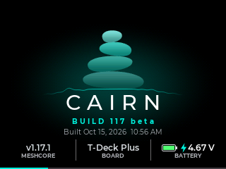
First-run checklist
- Name your node. Settings › Radio › Profile › Node name, up to 31 bytes, emoji allowed. Turn Position on to share your location in adverts. Save asks Send advert now?; choose Not now until the radio is set.
- Match the radio. Settings › Radio › Radio: pick the Preset your local mesh uses (USA/CAN, EU/UK 869, EU classic) or set a custom frequency, bandwidth, spreading factor and coding rate. Keep TX power within your region's limit. Save asks Apply radio change?.
- Set a scope if your mesh uses regions. Settings › Radio › Scope. Ask a local operator; many meshes need none. See Scope.
- Join your channels. Settings › Radio › Channels › Join. Public is the channel every MeshCore node starts with.
- Pair the phone app if you use one: open the MeshCore app, connect over Bluetooth and type the PIN shown on Home's Network card or in Settings › Connect › Bluetooth.
- Choose a GPS mode. Settings › Location › GPS: Eco for days of battery, On for tracking.
- Announce yourself. On the Radios tab tap Advert, choose Zero-hop or Flood and tap Send.
Rail, bar, page.
Most pages have three parts: the icon rail down the left, the status bar along the top, and the content. Text entry pages hide the rail; the splash and the lock screen fill the screen.
The rail
Six tabs, top to bottom. The open tab gets a tinted pill in its colour, and every page title is drawn in its tab's colour.
| Tab | Colour | Marker |
|---|---|---|
| Home | teal | none |
| Chats | blue | red pill: unread messages, 1 to 99+ |
| Nodes | violet | magenta pill: new adverts since you last looked, +1 to +99 |
| Radios | amber | amber up-arrow when a packet is sent; teal dot when one is received; amber dot until the noise floor is calibrated; red PAUSED while a band scan holds the radio |
| GPS | green | satellite count (green with a fix, dim while searching); a moon while Eco sleeps; the icon turns red while GPS is off |
| Settings | grey | amber dot while Wi-Fi transfer runs; teal dot while the card is busy with a background delete |
Touch
- Tap a tab to open it at its root.
- Tap the open tab on a sub-page: back to its root, your place kept. Tap again: scroll to the top.
- Hold Chats while unread: Mark all read?
Keys
- ← from the left edge of a page reaches the rail; ↑↓ move along it, OK opens.
- → off the rail lands on the page.
- M9: HOME and MSG jump straight to Home and Chats.
OLED boards
Page tabs run along the bottom, or down the side if you set Settings › Display › Page tabs to Side. See chapter 17.
The status bar
The page title sits on the left, in its tab's colour. The clock is always centred; it reads --:-- until the time is set. On the right, from the outside in: the battery (percent inside the outline, a bolt while charging, a plug on USB), then Wi-Fi bars, Bluetooth, mute and the padlock. The Bluetooth icon turns teal when the app is linked over Bluetooth; Wi-Fi turns teal when the app is linked over Wi-Fi and amber during Wi-Fi transfer. On the L2 Pro and T-Deck a MIC or REC pill shows whenever the microphone is live.
The bar's bottom edge flashes amber for a moment when the radio sends and teal when it receives.
Notices. Short messages take over the status bar for a moment, led by a coloured mark (red for errors), then the bar comes back. A notice with a chevron, such as New message from Bob, opens what it is about when you tap it.
Going back
A sub-page shows a teal ‹ before its title. Any of these goes back one page; unsaved edits ask Discard changes? first.
Touch
- Tap the ‹ Title zone, or just below it.
- Swipe right, mostly sideways, starting well in from the left edge (not on the rail). Works even if the swipe starts on a button.
- The User / PRG button's long press (the default Back).
Keys
- M9: BACK. It first leaves adjust or pan mode, closes a menu, then goes back. At a tab's root it goes Home.
- T-Deck: ⌫ outside a text field, or hold the trackball in with nothing selected.
OLED boards
Wio L1: the Back button. T096: pages loop forward with a click.
The back swipe does nothing on root pages, on the map (dragging pans it), on sliders, and on the keyboard screen.
Gestures
| Gesture | How | Does |
|---|---|---|
| Tap | Touch and lift within about 0.6 s without moving. | Selects or activates. A highlight shows while you press. |
| Hold | Keep still for about half a second. | The control's hold action, while your finger is still down. A short tick sounds when a hold opens a menu or page. A control with no hold action takes a hold as a tap. |
| Drag, flick | Move your finger. | Lists follow your finger; a flick keeps them moving. |
| Back swipe | Swipe right at least 60 px, mostly sideways, starting away from the rail. | Back one page. |
| Pull down | At the top of the Nodes list, pull down until it says Release to scan. | Repeater scan. |
| Swipe up | On the quick panel. | Closes it. |
| Pinch | Two fingers, on the GPS map only. | Zooms. Elsewhere a second finger is ignored, so a resting thumb won't cancel a tap. |
| Double tap | On the GPS map. | Zooms in one level on that point. |
There is no sideways swipe between tabs.
Dialogs, card pages and holds
- Dialogs put the safe choice on the left, and it is the default. Tapping outside, pressing the User button or locking chooses it. Taps are ignored for a moment after a dialog opens, and its confirm button never appears under the finger that asked.
- Menus are card pages. Holding a message, a chat, a node or the map opens a page of cards in the Settings style, each with a title and a live summary. A red card (such as Delete…) sits last.
- Hold to confirm. Tiles that erase something say how long to hold (Hold 1.5 s, Hold 2 s) and fill as you hold; a dialog then asks once more. Sliding your finger cancels.
- Asks before switching. Turning Wi-Fi, Bluetooth or GPS on or off from the board asks first, with a line that says what changes (for example that a linked app will disconnect). Switching GPS between On and Eco acts at once.
The quick panel
One place for the switches you reach for most.
Open
- Tap the status bar's clock or icons.
- Press the User / PRG button once (the default click).
- L2 Pro, Heltec kit, T-Deck: tap Home's big clock.
- M9: CTRL. T-Deck: Alt+C, or Space (the default click action).
Close
- Swipe up on it, or tap outside it.
- Press the User button again.
- M9: CTRL again, or BACK.
- Locking, or a message taking over, also closes it.
| Tile | Tap | Hold |
|---|---|---|
| Wi-Fi | On or off, after Turn Wi-Fi on? / off? | Wi-Fi settings |
| BT | On or off, after a confirm | Bluetooth settings |
| GPS | On → Eco → Off → On. Leaving Eco for Off, and Off for On, ask first. | GPS settings |
| Sound | Mute or unmute | Sound settings |
| Lock | Lock now | same as tap |
| Torch | The whole screen white at full brightness. A tap or a press ends it. | same as tap |
| Advert | The Zero-hop / Flood advert sheet. Nothing is sent until Send. | same as tap |
| Screen | Screen off (and lock, if Auto lock is on) | same as tap |
Below the tiles: a brightness slider, a key light slider on the M9 and T-Deck, and a volume slider on boards with a speaker (it reads Off while muted). The bottom row holds Audio (L2 Pro and T-Deck), LoRa (the radio settings), SD (Files) and Capture, which saves a screenshot of the page under the panel to /Screenshots on the card.
Lock and wake
Locking keeps touches and presses from doing anything by accident. The lock screen shows a large clock, the date, the battery, a card for unread messages, and a padlock with the unlock hint.
| Board | Lock | Unlock |
|---|---|---|
| L2 Pro | hold WAKE 1 s, the quick panel's Lock, or Auto lock | double-press WAKE or User |
| Heltec kit | hold IO 1 s, Lock, or Auto lock | double-press IO or PRG |
| ThinkNode M9 | the quick panel's Lock (CTRL), or Auto lock | OK twice, or hold OK |
| T-Deck | the quick panel's Lock, or Auto lock | click the trackball twice |
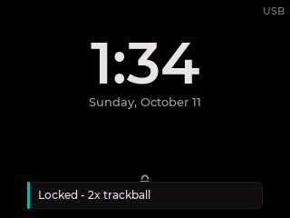
With Touch unlock on (Settings › Hardware › Lock), holding the padlock for 1.5 s also unlocks; a ring fills around it. While locked, other presses only light the lock screen.
Waking. Any button or key wakes a dark screen and does nothing else. With Tap to wake on, a touch wakes it too. On the L2 Pro and Heltec kit a WAKE/IO click turns a lit screen off. On the M9, MIC turns the screen off.
Screensaver and themes
Screensaver (Settings › Appearance › Screensaver) replaces a screen that would otherwise stay lit, that is, with Timeout set to Never or with Stay on USB. Styles: Beacon (a small card with the time and new messages that moves every 30 s), Ambient (clock, date, sun times and status at a glance), Night clock (a large clock, red after sunset), Auto and Off. It starts after 1 to 30 minutes without a touch, runs on USB only unless you allow battery, and can show a message count, the sender or the full text. Any touch or key only ends it. New devices start with Ambient after 1 minute at 50 %.
Themes (Settings › Appearance › Theme): Dark, Neon, Light, Sunlight (highest contrast, for outdoors), Night (reds and ambers, keeps night vision), Ocean, Cartoon, Red Radar and Green Radar. Each previews live as you tap it.
The cheat sheet.
The same action, three ways. Touch covers the L2 Pro, the Heltec kit and the T-Deck's screen. Keys cover the ThinkNode M9 and the T-Deck's keyboard and trackball. OLED covers the Wio L1 family's joystick and the T096's one button.
Moving around
| Action | Touch | Keys (M9 / T-Deck) | OLED boards |
|---|---|---|---|
| Back one page | Tap ‹ Title; Swipe right from away from the rail; User long press | M9 BACK. T-Deck ⌫ outside a text field, or hold the trackball with nothing selected | L1: Back button |
| Home | Tap the Home tab | M9 HOME; BACK at a tab's root | L1: ←→ to the Clock page |
| Next / previous page | Tap a rail tab | ← onto the rail, ↑↓, OK | L1: ←→ (bottom tabs) or ↑↓ (side tabs). T096: click |
| Back to a tab's root, then the top | Tap the open tab, then again | Rail cell, OK | — |
| Scroll a long list fast | Flick | Quick repeated ↓: after six presses each moves 2 rows, then 4. T-Deck: roll the ball fast | — |
| Open the quick panel | Tap the status bar clock or icons; User click; L2 / Heltec / T-Deck: tap Home's big clock | M9 CTRL. T-Deck Alt+C or Space | — |
| Close the quick panel | Swipe up, tap outside, or User | CTRL again, or BACK | — |
| A quick tile's settings | Hold the tile | Ring on the tile, Hold OK | — |
| Long press anything | Hold ½ s | Hold OK | T096: hold the button |
| Change a slider or stepper | Drag; hold − / + to repeat | ←→ step it; OK enters adjust mode (amber ring), then ↑ is more | L1: ←→ in the editor |
Messages
| Action | Touch | Keys (M9 / T-Deck) | OLED boards |
|---|---|---|---|
| Open Chats | Chats tab | M9 MSG | L1: Messages page |
| New message | User double-click; + New message | M9 @. T-Deck double Space | L1: Messages, pick a recipient, then a preset |
| Find a recipient | Tap Search… | Just type in the picker | — |
| Start a reply in a chat | Tap the message field | Type a letter: the text box opens with it | L1: reply with a preset |
| Send | Send beside the field | M9 OK (nothing selected). T-Deck keyboard Enter | — |
| Message menu | Hold the bubble | Ring on the bubble, Hold OK | — |
| Chat menu ⋯ | Tap ⋯ at the top right | → from the message field or Send | — |
| Read a long message | Tap the bubble (the Reader) | Ring on it, OK | L1: open the message |
| Mark everything read | Hold the Chats tab | Ring on the Chats tab, Hold OK | — |
| Emoji | ☺ key; Recent keeps your last 24 | ☺ in the strip; press again to close | — |
| Caps lock | Double-tap Shift | The keyboard's own Shift | — |
| Fix a near-miss key | Slide to the right key before lifting | — | — |
| Delete fast | Hold ⌫ to repeat | M9: hold DEL deletes the word before the cursor | — |
| Leave a field, keep the draft | ‹ or User long press | M9 BACK. T-Deck: hold the trackball, or ⌫ on an empty field | — |
Mesh, radio and map
| Action | Touch | Keys (M9 / T-Deck) | OLED boards |
|---|---|---|---|
| Send an advert | Hold Home's LoRa card; quick panel Advert; Radios › Advert | M9 ADV. Radios tab: the ring lands on Advert, so OK OK sends zero-hop | T096 and repeaters: hold on Spectrum |
| Scan for repeaters | Pull down at the top of Nodes | ↑ past the top of Nodes | — |
| Node menu | Hold a node | Hold OK | — |
| GPS on / off | Quick panel GPS tile; the GPS page's switch | M9: hold ADV | L1: Settings › Location |
| Open the map | GPS tab › Map | M9 MAP | — |
| Pan the map | Drag | M9 MAP again: pan mode, arrows pan, OK taps the centre | — |
| Zoom the map | Pinch, double tap, or + / − | + / − keys | — |
| Recentre on you | Tap the GPS tab again, or Follow | Follow button | — |
| Map menu | Hold an empty part of the map | — | — |
| Pick a Radios tab | Tap LoRa / Wi-Fi / Bluetooth | T-Deck 1 2 3 | — |
| Scanner Plot / List | Tap the switch | # | — |
| Clear band-scan peaks | Hold the band plot | — | — |
| Read a moment on the Battery graph | Tap the graph | OK on the graph: a cursor at now; ←→ move it, BACK clears it | — |
| GPS views | Tap the status or any card for GPS data | Ring on a card, OK | L1: joystick click steps through position, compass and GPS data |
Screen, sound and power
| Action | Touch | Keys (M9 / T-Deck) | OLED boards |
|---|---|---|---|
| Wake the screen | Any button; a tap with Tap to wake on | Any key (it only wakes) | Any press (it only wakes) |
| Screen off | WAKE/IO click; quick panel Screen | M9 MIC; quick panel | — |
| Lock now | Hold WAKE/IO 1 s; quick panel Lock | Quick panel Lock | — |
| Unlock | Double-press WAKE or User; hold the padlock 1.5 s (Touch unlock) | M9 OK twice or Hold OK. T-Deck: trackball twice | — |
| Mute / unmute | User triple-click; quick panel Sound | Quick panel Sound | — |
| Flashlight | Quick panel Torch; a button action | Quick panel Torch | — |
| Screenshot | Quick panel Capture; the Screenshot button action | Quick panel Capture | — |
| Clock and time zone | Hold Home's header | Settings › System › Clock | L1: Settings › System |
| Power back on after Hibernate | User / PRG (not WAKE / IO) | M9: the power slider (off, then on) or RESET. T-Deck: the trackball click is not yet confirmed | — |
| Rescue console | Long-press User during the splash | — | T096: hold during the first 8 s |
| Player (T-Deck keyboard) | Tap the controls | Space play/pause, n/p next/previous, s shuffle, r repeat, ←→ seek 10 s, ↑↓ volume, 0–9 jump | — |
| Recorder (T-Deck) | Tap Record | Mic opens it; r or Enter record/stop, m mark | — |
The configurable button
On the L2 Pro (User) and Heltec kit (PRG) the button's click, double-click and long press run the actions you pick in Settings › Hardware › Buttons. On the T-Deck the same page sets Space and double Space (outside a text field).
Actions to choose from, grouped General, Mesh, Tools and Audio: None, Quick panel, Back, New message, Send advert, Ping last node, Scan repeaters, Toggle GPS, Flashlight, Screenshot; on the Heltec kit also Screen off and Lock now; on the L2 Pro and T-Deck also Player, Recorder and Play / pause.
Fixed rules come first, in this order: while locked, a click or long press only lights the lock screen and a double-press unlocks; on a dark screen any press only wakes it; with the flashlight on, any press only turns it off; a triple-click always mutes; and while a panel, sheet or dialog is open, a press closes it instead of running its action.
Everything at a glance.
The first tab: a large clock over six live cards. Tap a card to open its page.
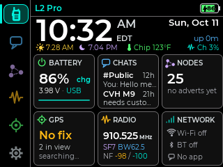
Header and strip
The clock in your 12h, 24h or analog style, with the time zone; the date and the uptime on the right. Until the time is set it reads --:-- and time not synced. The thin strip under it holds up to three readouts:
- Sunrise and sunset for today, from your GPS fix or your advert position. Hidden without a set clock and a position.
- Temperature from an environment sensor, or the chip's own sensor labelled Chip. The chip runs 30 to 40 °F above the room.
- Channel busy, Ch 12%: the share of the last minute the channel sat at least 6 dB above the noise floor. Amber above 30 %, red above 60 %.
The cards
Percent, time left (~14h) or chg / full on USB, voltage and source, and a trend line.
Tap: Battery pageUnread count and the two newest conversations with a one-line preview.
Tap: ChatsSaved contacts, +N new adverts, the last one heard with its age, distance and direction.
Tap: NodesFix with satellites and position, No fix, Eco with the next fix, or Off.
Tap: GPSFrequency, SF and bandwidth, noise floor and the current reading.
Tap: Radios · Hold: Send advertWi-Fi network, Bluetooth state or the pairing PIN, and how the app is linked (App: BT, App: Wi-Fi, No app).
Tap: Settings › ConnectOn the L2 Pro and T-Deck an Audio card sits one swipe down: songs, recordings and free recording time, or what is playing. While a song plays, Home's status bar shows its title.
Read it, answer it, right there.
Direct messages, channels and room servers share one list. Threads show bubbles with hops, times, delivery and repeats heard. On the L2 Pro, Heltec kit, ThinkNode M9 and T-Deck.
The chat list
The title reads Chats, or Chats · N unread. + New message sits at the top, then conversations, newest first. Each row has a coloured avatar, the name (in the accent colour while unread), the age of the newest message, a one-line preview (You: … for yours; channel posts start with the sender's name) and an unread pill.
- Tap a row to open the thread.
- Hold a row for the chat's card page: Open, Mark read, Contact (route, favourite, share) or Channel (key and slot, leave), All read… and Delete chat….
The list doesn't re-sort while your finger is on it. Channel names always start with #; rooms show as @Name.
Starting a conversation
Touch
- + New message, or double-click User / PRG.
- Nodes: hold a node › Message, or Chat on its detail page.
- Tap a New message from… notice.
Keys
- M9 @ opens the picker anywhere.
- T-Deck: double Space (default).
- In the picker, just type to search.
The picker lists CHANNELS · N, then CONTACTS · N with each contact's route and when it was last heard (direct · 5d). Rooms you are logged in to appear as @Room. Repeaters are never listed: use Admin on their node page. Pick a row and the thread opens ready to type.
Reading a thread
The title shows the name and message count (#Public · 111 msgs). Your bubbles sit on the right, others' on the left with the sender's name on channels. Date dividers (Today, Yesterday, Sun Oct 11) appear once the clock is set. Each bubble ends with a meta line: hops and time for incoming (0 hops · 9:29 AM), time and delivery for yours.
- Tap a bubble to read it whole in the Reader, with ‹ Prev, Actions and Next ›. Each message you view is marked read.
- Hold a bubble for the message's card page (below).
- Tap ⋯ at the top right for the chat's card page.
Mentions show as @Name; your own name is highlighted. Replies show the quoted line in grey with a bar in the margin.
Typing a message
A direct message holds up to 160 bytes. A channel post holds 160 bytes less your node name and two (it is sent as Name: text). Emoji and accented letters use more than one byte. A counter shows the bytes left once 20 or fewer remain, amber then red when over.
Touch keyboard · L2 Pro, Heltec
- Tap the message field: the full keyboard opens, with the last two messages above for context.
- A key enters when you lift; slide to fix a near miss first.
- Send sits beside the field, away from Delete. A slide only sends if it started on Send.
- Shift once for one capital; double-tap for caps lock.
- ?123 and #+= for symbols; ☺ for 229 emoji in seven tabs plus Recent.
- Hold Backspace to repeat; it removes a whole emoji at once.
- ‹ (or the User long press) leaves and keeps the draft.
Text box · M9, T-Deck 118
- No on-screen letters: your keyboard types into a tall box that wraps over most of the screen.
- In a thread, just start typing: the box opens with that letter.
- The strip below holds ☺ (emoji), ?123 (symbols the keys lack), the bytes left, and Send or Done.
- ☺ and ?123 open over the lower half; press again to close (T-Deck: or tap the text).
- Send: M9 OK with nothing selected; T-Deck Enter.
- M9: hold DEL to delete the word before the cursor.
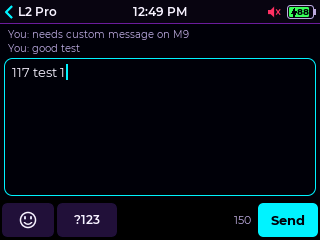
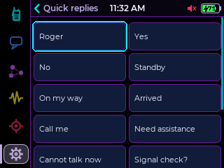
Quick replies. Aa beside the message field opens ten short presets as cards; a tap adds one to your draft. Edit them in Settings › Radio › Quick replies: each holds up to 32 bytes, and Reset to defaults… brings back Roger, Yes, No, Standby, On my way, Arrived, Call me, Need assistance, Cannot talk now and Signal check?.
Drafts. Each conversation keeps its own unsent draft. Drafts are lost at a restart.
Replying to a message
- Hold the message (keys: ring on the bubble, Hold OK) and choose Reply.
- The keyboard opens with Replying to Bob and the quoted message. A bar above the message field shows the quote with an × to cancel reply mode and keep the draft.
- Send. Replies use the phone apps' format, so they look the same there.
Quick reply on the same page picks a preset and asks Send reply? first.
Copy and paste 118
Hold a message › Copy (a channel message copies its text without the sender's name). Every text field then shows a Paste chip: beside the context lines on the full keyboard, in the strip on the M9 and T-Deck. Paste inserts what fits the field's limit; Pasted · cut to fit says when part was left out. The clipboard holds one entry until a restart.
Delivery, heard and resend 118
A direct message you send from the device shows how it is doing on its bubble:
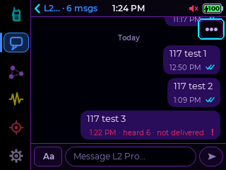
- Heard N. Your messages count how many repeats of them this radio heard (heard 3): proof the mesh carried it, even on a channel, which has no delivery receipt.
- Not delivered means no confirmation came in time. It may still have arrived; a late confirmation still turns it to two ticks.
- Resend: hold your message › Resend (or in Details). A direct message goes again as the same message, so the other side shows it once. Your own channel message asks Resend message? and goes again as a new message with its own heard count.
- A Cairn device that receives the same direct message twice (a retry whose first copy arrived but whose confirmation was lost) shows it once.
Auto retry 118
Settings › Radio › Auto retry flips on with a tap (off by default; the card reads 3 path · 2 flood while on). An unconfirmed direct message is then sent again by its path, 3 tries in all; then the path is reset and it floods up to 2 times. A contact with no known path gets 3 floods. Each wait is longer than the last (about 10 s, 20 s, 30 s, then a minute, each varied a little), so a run lasts about two and a half minutes without flooding the mesh. The bubble shows retry 2/3 or flood 1/2 while it works. The automatic tries make no sound.
The message's card page
Hold a bubble to open it. Someone else's message offers Reply, Quick reply, Details (hops and signal), Reader, Copy and Delete…. Your own offers Resend (not on a delivered message), Details, Reader, Copy and Delete….
Details is a page of cards. For an incoming message: who, where and when, then how it arrived: hops, signal (SNR and RSSI) and the route, naming repeaters where it can. For yours: to whom and whether it was delivered, then the repeats heard and up to four repeaters with their SNR.
Delete… asks first and removes the message from this device only; the phone app keeps its own copy.
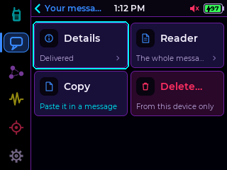
The chat's ⋯ page
Tap ⋯ at the top right of a thread. A channel shows Channel, All read… and Delete chat…. A direct chat with a saved contact adds:
- Reset path, with the stored path as its summary (via A1 › 3F, Direct · in range). A tap forgets it: Path reset · next message floods. The next reply learns a fresh route.
- Find path: floods a request for a route and stores the one the answer took (Path found · 2 hops).
Delete chat… removes every message of the conversation from this device. Deleting a channel's chat keeps you in the channel.
Unread and new-message alerts
A thread you open is marked read. Unread shows as the Chats rail badge, the Home card's pill and, on text-entry pages where the rail is hidden, a red envelope in the status bar.
When a message arrives while you are using the device, a notice appears in the status bar; tap it to open the thread. When the device has been idle with Msg wake on, the screen wakes and shows a full-screen preview with Dismiss, Next ›, Open and All read. A screen you turned off yourself stays dark; the message waits. Message tones are set in Settings › Hardware › Sound and don't play while a phone app is connected.
History and sync
- The device keeps up to 200 messages across all conversations; the oldest go first.
- Keep chats (Settings › System › Restart, on by default) saves them across restarts, unencrypted. Turning it off erases the saved copy.
- Messages a phone app sends appear in the device's chats as yours, with the delivered tick when confirmed. With CairnOS, messages sent on the device appear in the app.
Who hears what, and where.
Channels decide who can read a message. Scope decides which regional repeaters carry it.
Channel kinds
The well-known key every MeshCore node starts with. Everyone on the mesh can read it.
The key is made from the name, # included. Anyone who knows the name can read it. Capitals count: #Test and #test differ.
A random key shared by hand: 32 hex digits or base64. Only people with the key can read it.
Joining and leaving
- Open Settings › Radio › Channels and tap Join (it shows the slots used, up to 40).
- Choose Hashtag, Private or Public.
- Type the name, or the name and key. New key makes a random key for a new private channel.
- Tap Join. Joined #name confirms it; nothing is sent over the air.
Tap a channel for its page: kind and slot, Open chat, Scope, the key (a private key stays hidden until tapped), and Leave, a hold-to-confirm tile below the first screen. Stored messages stay in Chats after you leave. A private key is not kept, so you need it again to rejoin.
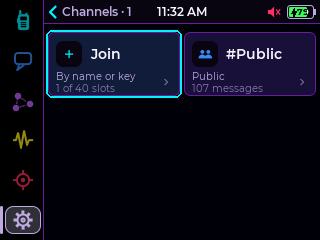
Scope (regions) 118
Some meshes run regional repeaters. A repeater set to a region only passes floods scoped to a region it allows. The phone apps scope each message they send. From Cairn 118 the device does too.
- Default scope: Settings › Radio › Scope: No scope, a region you have used, or Enter a region…. Type the name as your repeaters use it, without the #; capitals matter, so a name with capitals asks first. This is the same default the phone apps set and show: change it in either place and both follow.
- Per channel: a channel's page has a Scope tile: Use default, No scope or a region. It is kept by the channel's key, so a channel you leave and rejoin starts on the default again.
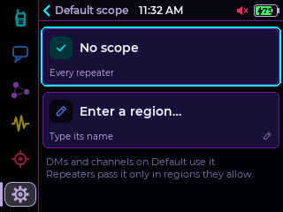
| You send | From | Scope used |
|---|---|---|
| Channel message | the device | the channel's own scope, else the default |
| Direct message | the device | the default (a message with a known path goes direct, unscoped) |
| Any message | the phone app | the app's choice; a channel with no app scope uses its device scope |
The pages are on the L2 Pro, Heltec kit, M9 and T-Deck. On the T-Display SF32 and the Wio L1 family, messages typed on the device use the default set from the app. Private ($) regions can't be entered on the device.
Who is out there.
Recently heard adverts and your saved contacts, as a list or as cards. Ping them, message them, map them, and log in to repeaters and room servers.
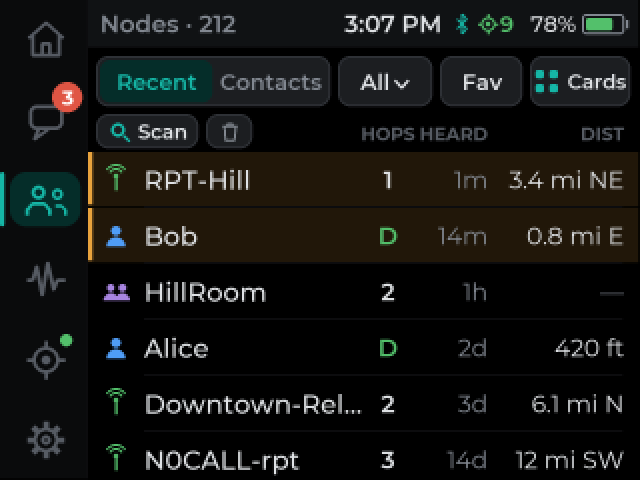
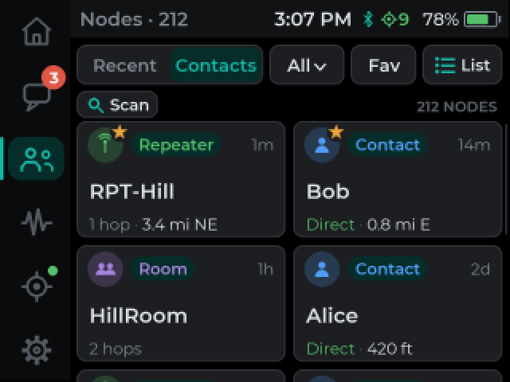
The toolbar
- Recent / Contacts: recently heard adverts (including nodes you haven't saved) or your saved contacts. The device holds up to 350 contacts; the title warns when the table is nearly full.
- Filter: All, Contact, Repeater, Room. In Recent, Clear recents… is the menu's last item.
- Sort: Heard, Name, Distance, Favorites first.
- Cards / List switches the view.
The title counts them: Nodes · 9, or Nodes · 4 of 9 when filtered. Companions show a walkie-talkie, repeaters a mast, rooms a group. Favourites get an amber tint (list) or star (cards). List rows show HOPS (D for direct), HEARD and DIST with a bearing; distance needs your own GPS fix and the node's shared position.
Touch
- Tap a node for its detail page.
- Hold it for its actions: Ping, Message, Details, Contact (or Admin on a repeater).
- Pull down at the top of the list until Release to scan: a repeater scan.
Keys
- OK opens, Hold OK for actions.
- ↑ past the top of the list scans for repeaters.
- In Cards view the ring takes one card at a time; ←→ move between the two in a row.
Node detail
The name, then a row with the type, the favourite star and the short key (4b44fe…d0317a ›). Cells show HEARD, DISTANCE, BEARING, PATH (direct, 1 hop via 4e, unknown · flood), POSITION and LAST PING. A heard time marked clock fast means the node's own clock is ahead of yours.
Buttons: Ping, Chat (or Admin on a repeater), Map and ⋯.
- Ping checks the node can hear you: RTT 123ms SNR 7.5dB, or Ping timeout. One at a time.
- Map opens the GPS map centred on the node, with you both in view.
- The short key opens a QR code the MeshCore apps can scan to add the contact, with the full key under it.
Above: the node's ⋯ page. Removing a contact keeps its messages in Chats; its next advert may add it back, depending on your auto-add setting in the app.
Repeater scan
Finds the repeaters in direct radio range and shows how well each direction works. Start it by pulling down on Nodes (keys: ↑ past the top), or with the Scan repeaters button action, then Scan for repeaters. It listens for 15 to 45 seconds.
Each row shows the repeater, a Contact, Heard or New chip, and signal both ways: THEY HEAR YOU and YOU HEAR THEM. Tap one you haven't saved for Add as contact or Add and log in…. A 30-second cooldown follows each scan.
Repeater and room admin
- Open a saved repeater's detail page and tap Admin (a room: Log in…). The device clock must be set.
- Type the password (up to 15 characters) or leave it blank for guest access. Remember password saves it on this device, unencrypted.
- Tap Log in. A repeater never says "wrong password"; it just doesn't answer. If a direct login fails, Try flood resets the route and floods the login.
Logged in, the page has tabs: Status (battery, uptime, clock, noise floor, airtime, packet counts), Nearby (repeaters it hears, repeaters only), Sensors and Actions (admins only): Advert, Flood advert, Sync clock, Radio, Clock, Version and Hold to reboot. Requests are paced to save airtime: one at a time, with a short wait after each. There is no free-text command line.
Rooms. Log in to a room server and it appears in Chats as @Room. Posts always appear to come from the room.
See the air.
One tab, three radios: LoRa (its tab shows your frequency), Wi-Fi and Bluetooth. The rail cell comes back to the tab you picked last.
The LoRa page
- Header: SF, bandwidth and coding rate over TX power and the airtime of a 40-byte packet (~214 ms / 40 B), with a large Advert button.
- Meters: NOW (latest reading), FLOOR (noise floor), PEAK and MARGIN (now over floor, green above 6 dB).
- Graph: about 80 seconds of signal. Tap it for Spectrum.
- Traffic card: the newest packets with TYPE, ROUTE, RSSI, SNR and AGE. Tap it for Traffic.
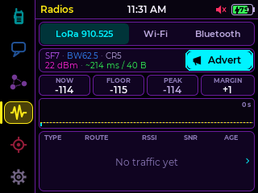
Sending an advert
An advert announces your node. Choose Zero-hop (Neighbors in direct range only) or Flood (relayed across the mesh, scoped). Nothing is sent until you tap Send. It carries your position if Profile's Position is on.
Open the sheet from the LoRa page's Advert, the quick panel's Advert tile, a hold on Home's LoRa card, the Send advert button action, or ADV on the M9.
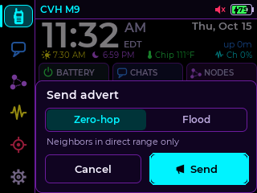
Traffic and packet details
Traffic lists every packet heard over about the last hour, up to 2048, newest first, under a strip with PACKETS, PER MIN, AVG RSSI and AVG SNR. Tap a packet for its window: the sender first, then type, route and hops, signal, margin over the spreading factor's limit, from (or channel), to, heard via, size with airtime, and when it was heard. Open node jumps to a saved sender's page.
| Code | Packet | Code | Packet |
|---|---|---|---|
| MSG | direct text message | GTX | group or channel text |
| ACK | acknowledgement | GDA | group data |
| ADV | node advert | PTH | path return |
| REQ / RSP | request / response | TRC | trace |
| ANQ | anonymous request | MPT | multipart |
| CTL | control | RAW | raw or custom |
Spectrum: Channel and Band
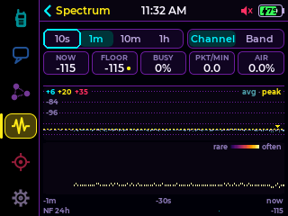
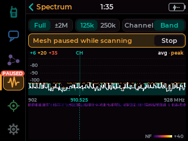
Channel only listens and never pauses the mesh. Pick 10s, 1m, 10m or 1h. The strip shows NOW, FLOOR, BUSY (amber above 30 %, red above 60 %), PKT/MIN and AIR. Under the trace a density map shows how often the signal sat at each level, and NF 24h traces the noise floor over a day. Tap a packet marker for its details, or the trace for a readout at that moment.
Band sweeps the whole band (Full) or ±2 MHz around your channel, at 125k or 250k steps, with a waterfall. Tap Start: the banner turns amber, Mesh paused while scanning, and the rail shows PAUSED. Your device sends and receives nothing until you tap Stop. It also stops when you leave the page, the screen goes dark, after 3 minutes without a touch, or when the mesh needs to send.
Wi-Fi scan
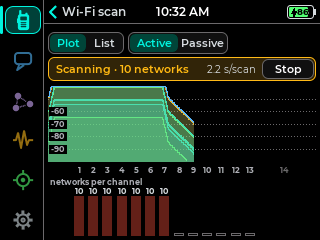
Shows the 2.4 GHz band, channels 1 to 14: one arc per network at its signal strength, the four strongest named, your own network's channel highlighted, and a bar per channel for how crowded it is. Tap the plot or a bar for a readout. The list names every network, hidden ones too, with channel, security and a Connected or Saved tag; tap one for Details, Show on plot or Join….
Active asks for names (probe requests); Passive only listens. A scan starts only when you tap Start, and stops when you leave the page, the screen goes dark or after 3 minutes without a touch. Nothing is sent on the mesh and LoRa keeps working. The status bar shows Scanning and the count.
Bluetooth scan, radar and Find
Shows the Bluetooth LE devices in range as bars over a half radar with -60, -80 and -100 dBm rings; MeshCore nodes are named in the accent colour. Tap the radar for a full-screen view: it shows distance only, never direction. Pick a device and Find shows its signal in big figures, one word for the last 10 s (Closer, Farther, Steady or Lost) and the last minute as a line; the optional Tone ticks faster as the signal climbs. BT scan works with Bluetooth off and while the app is connected.
Where you are, and who is near.
Position, course and speed, a GPS data page, and a map with you and every contact that shares a position. With a prepared microSD card, the map draws real tiles, fully offline.
GPS modes
The receiver is powered down. Position and the map keep the last fix.
Tracks continuously. The biggest single drain on the battery.
Wakes every 10 minutes for a fix, gives up after 90 s, then sleeps again.
Set the mode in Settings › Location › GPS, with the switch at the top right of the GPS page, the quick panel's GPS tile, the Toggle GPS button action, or a hold on ADV (M9). The rail's GPS icon is green while on and red while off.
The GPS page
Position shows LAT, LON, ALT, SPEED and FIX, a status pill (GNSS · 9 sats, SEARCHING, NO GPS DATA, ECO · next 3:40 PM) and a compass. The compass shows your course over ground, so it only points while you move.
Tap the status or any card for GPS data: satellites used and in view, HDOP and a rough accuracy, position, altitude, speed, course, the Maidenhead grid square, GPS time, the last fix and the raw NMEA stream.
Units follow Settings › Location › Units: Imperial or Metric.
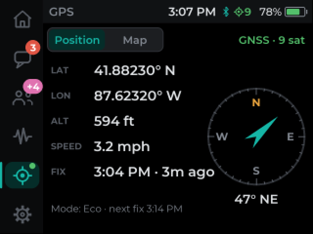
The map
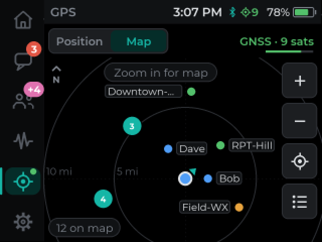
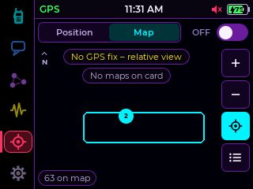
North is up. Where a map set covers the view you see tiles; elsewhere a radar view with range rings around you. Nodes are coloured dots by type; nearby ones merge into a bubble with a count. Your position is a filled dot during a live fix, an arrowhead while you move, a hollow ring for the last known fix. The map remembers your last fix across restarts.
Touch
- Drag pans; Pinch or double tap zooms.
- Tap a node: its card and its route, drawn through each repeater with a position. Tap the card for its page.
- Tap a bubble to zoom in on it.
- Hold empty map: Map card info, Choose map…, Reload card.
- Tap the GPS tab again to recentre.
Keys
- + / − zoom.
- M9 MAP opens the map; on the map, MAP again is pan mode: arrows pan, OK taps the centre.
- The buttons on the right (zoom, follow, list) take the ring.
Buttons on the right
- + / −
- Follow: recentre on you and follow.
- List: Nodes sorted by distance, for that visit.
Chips at the top explain the view: No GPS fix – relative view, No map card, No maps on card, Zoom in for map, No map for this area, Card isn't FAT32. Tap a card chip to retry. The attribution in the corner opens the map's licence.
Choosing a map set
Settings › Location › Map lists Automatic and each set on the card with its zoom range (okc-topo · z8–16). Automatic uses the most detailed set that covers the view. A set you pick is used wherever it covers the view, and Automatic elsewhere. The choice saves at once.
Building map sets with tools/maptiles.py
The device never downloads maps. You build a set on a computer and copy it to the card. USGS topo is the default source: public domain, no key, US only, up to zoom 16.
- Set up once (Python 3.9+):
python3 -m venv ~/.venvs/l2tiles && ~/.venvs/l2tiles/bin/pip install Pillow numpy, thenpython3 tools/maptiles.py selftest. - Prepare a FAT32 card. 8 to 32 GB SDHC is best; exFAT isn't read. On a Mac:
diskutil eraseDisk FAT32 CAIRN MBRFormat /dev/diskN(erases the card), or format it on the device under Settings › Hardware › Storage. - Estimate, then build.
python3 tools/maptiles.py estimate --center 35.0,-97.0 --radius-mi 10 --zoom 8-16 python3 tools/maptiles.py build --preset usgs:topo --center 35.0,-97.0 --radius-mi 10 \ --zoom 8-16 --out /Volumes/CAIRN --name okc-topo --title "OKC topo" python3 tools/maptiles.py verify /Volumes/CAIRN/Maps/okc-topo - Insert the card. The device notices a new set by itself.
| Area (USGS topo) | Zooms | Card size | First download |
|---|---|---|---|
| ±5 mi | 8–16 | ~33 MB | ~13 min |
| ±10 mi | 8–16 | ~126 MB | ~50 min |
| ±25 mi | 8–15 | ~200 MB | ~1 h 20 min |
| ±100 mi | 6–13 | ~195 MB | ~1 h 15 min |
- One screen is about 0.4 mi across at zoom 16, 1.6 mi at 14, 6 mi at 12 and 25 mi at 10. Each extra zoom level is about four times the tiles. A good plan: one wide, shallow set plus a deep one around home.
- Up to 8 sets per card, each in
/Maps/<name>/. The device magnifies the deepest level up to 2 more zooms; it looks blocky. - Other sources: Geoapify (free key), Thunderforest (bulk plans only), your own MBTiles, or a local tile server. OpenStreetMap's tile server, OpenTopoMap, CARTO, Esri, Google, Bing, MapTiler Cloud and Stadia are refused: their terms forbid bulk or offline use.
- Filters:
--filter night(a dark map),dim:N,gray. - A card you build is for your own use. Don't share or sell it.
Music, voice notes, your own alerts.
On the Wio Tracker L2 Pro and the T-Deck (both have a speaker and a microphone). The Heltec kit and the ThinkNode M9 have only a buzzer, so their builds have no player.
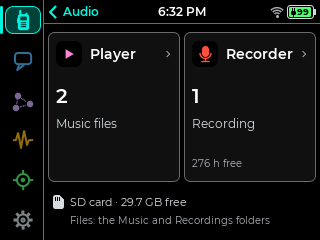
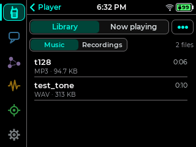
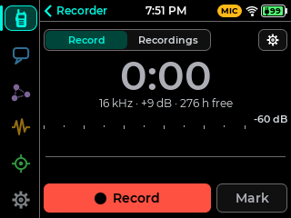
Player
Put MP3 or WAV files in a Music folder on the card; subfolders show two levels deep (Music/Artist/Album). Open the player from Home's Audio card (one swipe down), the quick panel's Audio button or a button action. The Library has Music and Recordings; tap a file to play it, hold it to delete it.
Now playing fills the screen with a 24-bar visualizer, the level, the peak and the loudest frequency, the EQ in use and the time. Tap it and the controls slide in: title, Library, Options, volume, progress and previous / −10 s / play-pause / +10 s / next. Tap the bars to put them away.
Options (⋯) are cards: Repeat, Shuffle, Volume, EQ, Screen off and Alerts. The EQ has five bands (150 Hz, 400 Hz, 1 kHz, 2.5 kHz, 6 kHz, ±6 dB) with Flat, Voice, Bright, Warm and Custom; drag a band's handle over the live spectrum to shape Custom. Music keeps playing with the screen dark unless you choose otherwise. Alert tones don't interrupt music unless Alerts is on.
Plays MP3 (CBR or VBR) and WAV (8, 16 or 24-bit, mono or stereo), 8 to 48 kHz; stereo plays as mono. On the T-Deck the card shares a bus with the screen and radio, so very large files are refused with Too fast for this card: use MP3.
Recorder
Records voice notes to Recordings as WAV at 16 or 8 kHz, named by date and time once the clock is set. The gear sets quality, mic gain, a time limit and Voice start (it waits for sound and keeps the half second before it). Mark drops a marker. A recording keeps going with the screen dark and is kept safe if the power or the card goes.
The microphone is only on in the Record view, while voice start waits, and while recording; the status bar shows MIC or REC whenever it is. On the T-Deck the Mic key opens the recorder, and on the recorder starts and stops a recording (r or Enter too; m marks).
Alert sounds from the card 118
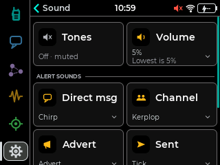
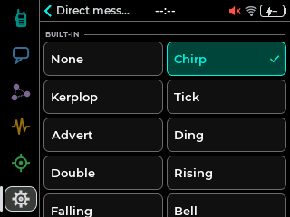
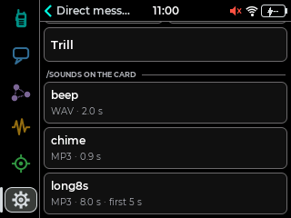
- Copy MP3 or WAV files into a
Soundsfolder at the top of the card (a card reader, USB drive mode, or Wi-Fi transfer's Sounds target). - Open Settings › Hardware › Sound and tap Direct msg, Channel, Advert, Sent or Startup.
- Scroll past BUILT-IN to /SOUNDS ON THE CARD. Each tap picks and plays. Back saves.
An alert plays at most the first 5 seconds of a file, fading out. The built-in tone plays instead while music is playing or paused, while the mic is on, or when the card or file isn't there. Mute silences both. Reset UI puts the tones back.
Link a phone. Move files.
Cairn works with the official MeshCore apps over Bluetooth, and on the four touch and key boards over Wi-Fi too. The card holds maps, music, recordings, sounds, pictures and screenshots.
Bluetooth and the phone app
In the MeshCore app, connect to the device and type the pairing PIN shown on Home's Network card or on the Bluetooth page. The PIN is auto · new each boot unless you set one with Change PIN (six digits; 000000 goes back to automatic). Auto PIN switches back too. Turning Bluetooth off while the app is linked asks first.
Wi-Fi
- Network opens the list of networks around you. Tap one: a saved network joins at once, an open one asks, a secured one asks for its password. Hidden network… at the bottom joins by name. Up to 8 networks are remembered; Wi-Fi reconnects to the strongest in range.
- Net time sets the clock from the internet. A change of more than an hour asks first unless Always sync is on in Settings › System › Clock.
- App link lets the MeshCore app connect over Wi-Fi on port 5000. The first time a phone connects the device asks Allow app over Wi-Fi?: Cancel, Allow once or Always allow. Allow only your own phone.
- Trusted lists phones that connect without asking (up to 4). Hold a phone's trash icon to forget it.
Wi-Fi adds about 20 to 30 mA while connected. Once connected, the Wi-Fi page shows the IP address.
Storage and Files
Settings › Hardware › Storage shows the card (type, size, used and free, format, bus speed and whether it is mounted), then USB drive (L2 Pro and T-Deck), Files, Eject, Re-scan and Format card (hold 2 s, erases everything and makes the card FAT32).
Files browses the card a folder at a time, with sizes. Hold a file or folder to delete it; a folder delete runs in the background and survives a restart. Back goes up a folder. Tap a .png, .jpg or .bmp to view it full screen; swipe sideways (keys: ←→) for the next one.
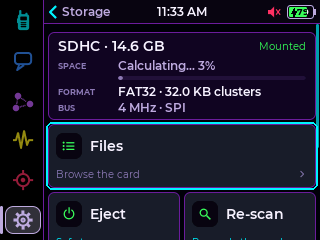
The same folder layout is used on every Cairn board, so a card moves between them.
USB drive mode
On the L2 Pro and T-Deck, Storage › USB drive turns the device into a USB disk: the card mounts on your Mac or PC and you copy files both ways (about 0.7 MB/s on the L2 Pro, 0.5 MB/s on the T-Deck). The radio and the app stay off meanwhile. Eject the disk on the computer, then tap Done: the device restarts and goes back to normal. Not on the Heltec kit or the M9, whose USB ports can't act as a drive.
Screenshots
The quick panel's Capture button takes the page under the panel; the Screenshot button action takes the current page. Both save PNGs to /Screenshots.
Every card, briefly.
Settings opens on six category cards. Each opens a page of cards, two across, each with its name and current value. A card that is on is washed in its colour and wears an ON pill.
910.525 · SF7/62.5
No Wi-Fi network
Off 15s · Batt 79%
Units: imperial
Screensaver: Beacon
Up 0m 39s · v1.17.1
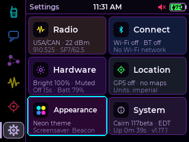
Saving. Appearance, Display, Sound, Buttons, Wake & lock and Clock apply as you change them and save when you leave. Profile, Radio, the Bluetooth PIN and Join channel keep a draft with Cancel and Save; the title shows • unsaved and leaving asks Discard changes?. Switches act at once, asking first when they would drop a linked app.
Radio
Node name (up to 31 bytes) and Position in adverts. With position on, adverts carry only 23 bytes of the name. Save offers to send an advert.
Join, open, scope and leave channels. Chapter 09.
TX power (with ~mW), then Preset, Frequency (typed, 150–960 MHz), Bandwidth (7.8–500 kHz), Spreading (SF5–12), Coding rate (4/5–4/8), Path hash (1–3 bytes per hop) and the airtime. Save asks Apply radio change?.
The default region for floods you send. Scope.
Edit, clear and reorder the ten presets.
| Preset | Frequency | Bandwidth | SF | CR |
|---|---|---|---|---|
| USA/CAN | 910.525 MHz | 62.5 kHz | 7 | 5 |
| EU/UK 869 | 869.618 MHz | 62.5 kHz | 8 | 5 |
| EU classic | 869.525 MHz | 250 kHz | 11 | 5 |
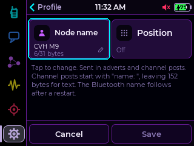
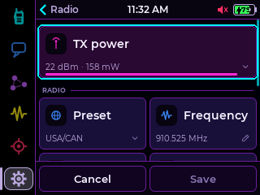
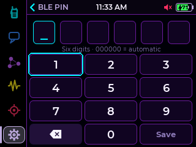
Connect
Wi-Fi, Network, Net time, App link, Trusted, Saved.
Bluetooth, App, the pairing PIN, Auto PIN, Change PIN.
The Wi-Fi and Bluetooth scanners live on the Radios tab.
Hardware
Brightness; Key light (M9, T-Deck); Timeout (5 s to Never); Stay on USB; Msg wake; Text size; Compact one-line messages; Units; Battery saver (M9, T-Deck, Heltec kit).
Tones (the mute switch), Volume on speaker boards, a sound per alert (Direct msg, Channel, Advert, Sent, Startup) and Test sound.
Click, Double-click and Long press actions (Space and Space x2 on the T-Deck). List.
Opens Wake & lock: Tap to wake, Auto lock, Touch unlock.
The card, USB drive, Files, Eject, Re-scan, Format.
Power off until the User / PRG button. Hold 1.5 s, then confirm.
Built-in tones: None, Chirp, Kerplop, Tick, Advert, Ding, Double, Rising, Falling, Bell, Trill. Defaults: Direct msg Chirp, Channel Kerplop, Advert Advert, Sent Tick. Startup sounds: None, Chime, Soft, Classic. On the Heltec kit and M9 the piezo plays them as beeps, with no volume.
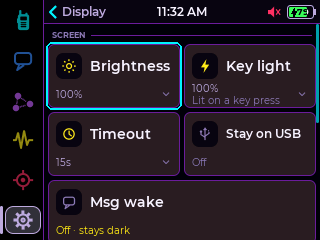
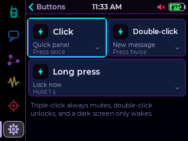
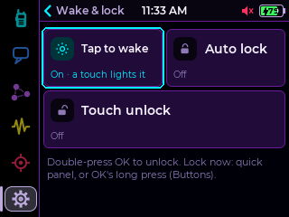
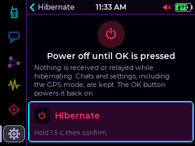
Location
Mode (Off, On, Eco), Receiver (live state), Last fix.
Which map set the map prefers, and a link to Storage.
A tap flips Imperial and Metric (also in Display).
Appearance
Nine themes, each card drawn in its own colours. Previews live.
Style, brightness, what messages show, when it starts, and whether it runs on battery. Preview shows it now.
System
Build, node name, slot (app0 · OTA), MeshCore version, public key (tap for the QR), contacts n/350, channels n/40, health and the last restart.
Style (12h, 24h, Analog), Time zone (US zones or Custom offset), Daylight, Always sync.
Opens Firmware update: the build, Updates, Wi-Fi, Wi-Fi transfer.
Opens Maintenance: last restart, Restart, Reset UI, Factory reset (hold 2 s), Keep chats, Clear chats (hold 1.5 s).
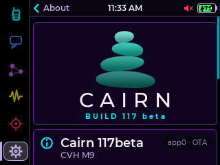
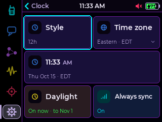
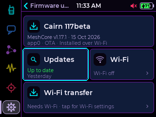
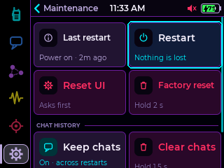
A ring does what a finger would.
The ThinkNode M9 has no touchscreen; the T-Deck has one and a keyboard with a trackball. Both drive the same interface by keys: a focus ring shows what is selected, the arrows move it, and OK taps it exactly as a finger would.
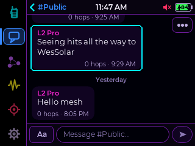
The keys
| Does | ThinkNode M9 | T-Deck |
|---|---|---|
| Move the ring | d-pad ←→↑↓ | roll the trackball |
| Tap what is selected | OK (d-pad centre) | click the trackball |
| Long press what is selected | hold OK | hold the trackball in |
| Back | BACK | ⌫ outside a text field; hold the trackball with nothing selected |
| Home | HOME | the rail, or touch |
| Chats / new message | MSG / @ | double Space for New message (default) |
| Send advert | ADV (hold: GPS on/off) | Radios tab, OK OK |
| GPS map | MAP; on the map: pan mode | GPS tab › Map |
| Quick panel | CTRL (again: close) | Alt+C, or Space (default) |
| Screen off | MIC | quick panel Screen |
| Recorder | — | Mic |
| Finish a text field | OK with nothing selected | keyboard Enter (Send, Done, Save), whatever the ring is on |
| Delete | DEL; hold: the word before the cursor | ⌫ |
| Radios tabs | the ring | 1 2 3 |
| Key light | Settings › Hardware › Display, or the quick panel slider | same, and Alt+B toggles it |
How the ring behaves
- Any key wakes a dark screen and does nothing else. Locked, OK twice (or a hold) unlocks; on the T-Deck click the trackball twice.
- Lists: ↑↓ step through the rows; past the ends they leave the list. The M9's keyboard sends one press per key, so holding an arrow moves once. Quick presses go further: after six, each moves two rows, then four. A fast roll of the T-Deck's trackball accelerates the same way.
- Sliders and steppers: ←→ change them at once. OK enters adjust mode (amber ring): then ↑↓ change them too, and up always means more.
- Hold-to-confirm tiles: hold OK; a short press says Hold OK to confirm.
- Pages with nothing to select (Battery, About) show no ring: ↑↓ scroll, ← goes to the rail, BACK leaves.
- Focus is remembered per page, so coming back lands where you were.
- T-Deck: touching the screen hides the ring; the next arrow brings it back where it was. Characters, Delete and the function keys act whether the ring shows or not.
Typing and chats
- In a thread, type a letter: the text box opens with it. In the new-message picker, typing searches.
- → from the message field (or Send) jumps to the chat's ⋯, instead of stepping up through the whole history.
- On a message, the ring outlines its bubble; OK opens the Reader and Hold OK the card page (Reply, Copy, Resend…).
- The emoji and ?123 panels, the Paste chip and Send are all reachable with the arrows.
- T-Deck: ⌫ on an empty field leaves it, but a run of deletes that empties the field never leaves by accident. Holding the trackball leaves without erasing.
Small screens, page by page.
The Wio Tracker L1 Pro family and the Heltec T096 run a compact Cairn interface. Pair the MeshCore app over Bluetooth for full messaging; the device shows messages, nodes, the radio, GPS and settings.
Wio Tracker L1 Pro, DV1, L1 e-ink
A five-way joystick and a Back button. Pages, in order: Clock (with a battery view), Messages, Nodes, Radio, GPS and Settings. Icons for the pages run along the bottom, or down the side with Page tabs set to Side.
Bottom tabs (default)
- ←→ change page.
- ↑↓ switch the page's own view (Clock / battery, the Radio and GPS views, Recent / Contacts) or move in a list.
- Press the joystick to select or open; Back steps out.
Side tabs
- ↑↓ step between pages; past Settings wraps to the first.
- ←→ switch the page's own view.
- On Messages and Settings, press (or →) to step into the list; Back steps out.
- Messages: read threads; reply or compose by picking a recipient, then a preset. Messages sent from the phone app appear as yours, and a delivered direct message shows a ✓; channels keep a > marker.
- GPS: a joystick click steps through position, compass and GPS data (satellites, HDOP, grid square, fix age). NO DATA means the receiver has sent nothing for 10 s.
- Settings opens on six categories: Radio, Connect, Location, Display, Sound and System. Inside a category, ↑↓ pick a row and press (or →) edits it; in an editor ←→ change the value. ← or Back returns to the categories. System › About shows the build, MeshCore version and key prefix. Path hash and Units are here too.
- A thin line under the title flashes when the radio sends (dashed) or receives (solid). Not on e-ink.
Heltec Mesh Node T096
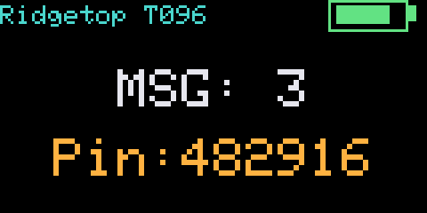
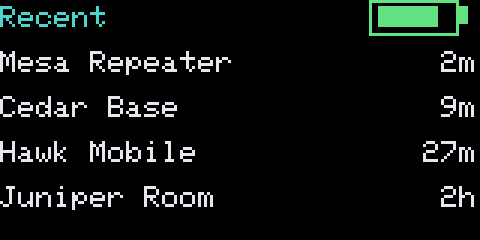
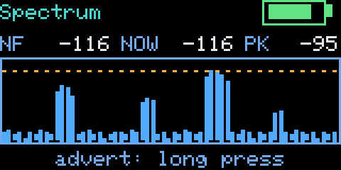
One button. Click: next page. Hold: the page's action, as the bottom line says (for example, send an advert on Spectrum). Reboot and Hibernate arm on the first hold and act on a second. Holding the button during the first 8 s after boot opens the rescue console. Settings is one list: Theme (Dark, Color, Night, Soft, Stock), Screen, Keep on USB, Bluetooth, GPS, Reboot, Hibernate, Back. The -ble image is the main build; -usb links the app over USB serial instead (no Bluetooth, no GPS page).
A square screen and a keypad.
The LilyGO T-Display SF32 runs its own card interface on a 480×480 AMOLED, by touch or by the 20-key keypad board. It has Home cards, Chats, Nodes with node pages, Radios with Traffic, GPS, an IR remote, sensors, and a player and recorder.
| Control | Does |
|---|---|
| ▲ / ▼ | move up and down; on values and sliders, up always means more |
| OK | select; hold: context menu |
| Back | back; on Home with the sidebar selected, screen off |
| Home | Home tab; hold: quick panel |
| newest unread message; hold: new message | |
| Stop | stop an alert or dismiss a pop-up; hold: mute |
| 0–9 | Home card shortcuts; letter jump in lists; typing in chats (multi-tap: 2 abc … 9 wxyz, 1 punctuation, 0 space; # cycles Abc / abc / ABC / 123; * symbols and emoji) |
| Radios | 1 LoRa, 2 Wi-Fi, 3 BLE; scanners: 4 Active, 5 Passive, 6 Plot / List, 7 Start |
| Side C | click: screen off or on; double: unlock; hold: lock |
| Side A | click: Settings; double: new message; hold 1–3 s: back; triple: mute; hold 3 s: power menu (Hibernate, Restart); wakes from hibernate; hold 12 s: hard restart |
| Side B | click: alert profile; hold: flashlight |
| Side D | hold 2 s: wake after a low-battery power-off; hold about 20 s: power cut and restart |
By touch: swipe right from away from the left edge to go back. The keyboard board carries the Wi-Fi chip, so Wi-Fi, online updates and Wi-Fi scan need the core docked; while Wi-Fi is on, the GPS pauses. Docked and on battery, sliding the power switch off shows a 5-second Switched off card (any key cancels), then saves and turns off. No offline map yet.
A repeater you can read at a glance.
The compact repeater is the standard MeshCore repeater (same mesh behaviour, CLI and remote admin) with a minimal Cairn screen on one button.
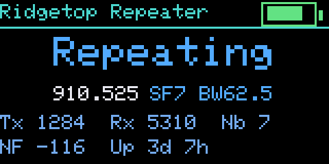
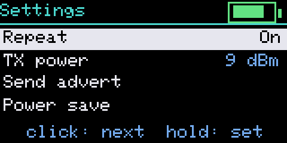
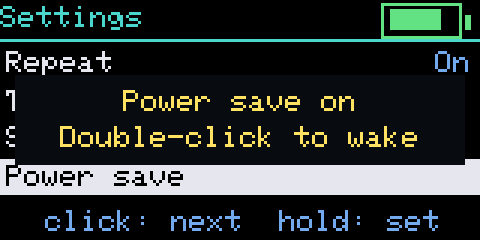
| Page | Shows | Hold |
|---|---|---|
| Status | repeat on/off, the channel, packets sent and heard, neighbours, noise floor, uptime, battery | turn off: keep holding about 3 s until Release to turn off |
| Spectrum | the channel over the last ~16 s, with floor, latest and peak | send an advert |
| Settings | Repeat, TX power, Send advert, Power save, Reboot | change or run the selected row; Reboot asks for a second hold within 5 s |
Click moves to the next page (on Settings, the next row). The screen turns off after 30 s (2 minutes on Spectrum); the first press only wakes it. Power save turns the screen and the TX LED off and is kept across reboots; double-click wakes it. After turning off, a press turns the repeater back on.
A board coming from a companion image starts as a new repeater with the admin password password. Set it up over USB serial (115200 baud), for example for the US:
set name Ridgetop Repeater
set radio 910.525,62.5,7,5
set tx 9
password MyAdminPass
set lat 35.1234
set lon -97.5678
rebootTX power steps through 1, 5, 9, 13, 17 and 22 dBm of radio-chip output; the T096 and Heltec V4 add their amplifier's gain on top. Repeater regions and the rest of the CLI are standard MeshCore.
Make the battery last.
The Battery page
Tap Home's Battery card. The header shows the percent, the voltage and a status line (On battery · 16h 18m, USB · charging). Cells show time left or to full, the rate, today's low and high, the last full charge and the mode. The graph covers 1H, 6H, 24H or 7D in % or volts, with markers for plug-in, unplug, full, warnings and restarts. Tap the graph for a readout of that moment. The week's history comes back after a restart, once the clock is set.
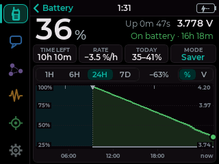
- Charging and Full are estimated from the voltage on most boards, so the percent reads high while charging. On the T-Deck the cell can't be read on USB: it says USB · charging; the blue LED going out means charged. On the M9 the reading pauses while Wi-Fi is on (Reading paused · Wi-Fi).
- Low battery warns at 20 % and 10 % with a tone, then the device turns itself off before the cell is drained. Plugging in cancels it.
- Battery saver (Settings › Hardware › Display, off by default, on the M9, T-Deck and Heltec kit): while the screen is dark the chip sleeps between radio packets. On the T-Deck it was measured at about 43 mA instead of 82 mA with the screen off, about 54 h of standby instead of 28 h, and it still received every packet. On the M9 it also turns Bluetooth off, and turning Bluetooth back on restarts the device.
- GPS is the biggest single drain. Use Eco or Off when you don't need tracking.
Hibernate
Settings › Hardware › Hibernate: hold the tile 1.5 s, then confirm. The device receives and relays nothing until you press User (L2 Pro) or PRG (Heltec); WAKE / IO can't wake it. Settings and chats are kept (chats only with Keep chats on). On the M9, use the power slider (off, then on) or RESET to wake it. Prefer Hibernate to a hardware power switch: it saves first.
When something is off.
| Symptom | What to do |
|---|---|
| Messages typed on the device stop at the first repeater, phone messages go through | Your mesh uses regions. Set Settings › Radio › Scope to the same region the app uses, or set a channel's own Scope. |
| A direct message says not delivered | Hold it › Resend. If it keeps failing, ⋯ › Reset path (or Find path) and send again. Consider Auto retry. |
| The clock reads --:-- | Normal after a power cut. Get a GPS fix, connect the app, or join Wi-Fi with Net time on. |
| Repeater login is greyed out | Clock not set · logins will be ignored: set the clock first. |
| The phone can't pair | Read the current PIN on Home's Network card; it changes each boot unless fixed. Check Bluetooth is on and Wi-Fi transfer is not running. |
| The app over Wi-Fi is refused | Answer Allow app over Wi-Fi? on the device. A refused address is blocked for 2 minutes. |
| Map shows Card isn't FAT32 or No maps on card | Format the card FAT32 (on the device or with the computer) and build sets into /Maps with tools/maptiles.py. |
| A song is refused: Too fast for this card: use MP3 | T-Deck: convert large WAV files to MP3. |
| A USB update "worked" but the build didn't change | The board runs from its second slot. Run esptool --chip esp32s3 erase-region 0xe000 0x2000, then write the -update.bin again. |
| Heltec V4 boot-loops after install | The touch build needs a V4-R8 (esptool flash-id reports Embedded PSRAM 8MB) in the Expansion Kit V2. A standard V4 needs the HeltecV4 preview build. |
| UF2 copy fails on a Mac with error -36 | cp -X file.uf2 /Volumes/<drive>/ from Terminal. |
| SF32 installer can't find the board or stops | Power switch ON with a charged battery; a data cable straight into the computer; close serial monitors. Reset: hold A 12 s, then run the installer again. |
| A beta isn't offered by Firmware update | By design: betas install by hand. The next full release will be. |
| Last restart shows Crash, Watchdog or Brownout in amber | The device restarted after a fault. Note the build number and report it. |
| The device seems stuck | L2 Pro / Heltec: tap RST. M9: RESET. T-Deck: power switch off and on. SF32: hold A 12 s. |
Questions people ask.
Yes. Every build is MeshCore v1.17.1 underneath and works with the official apps over Bluetooth, and on the L2 Pro, Heltec kit, M9 and T-Deck over Wi-Fi too.
No. Updates (online, Wi-Fi transfer, -update.bin, UF2, the SF32 installer) keep the identity, contacts, channels and settings. Only a first ESP32 install with the -full.bin after a full erase starts over.
Yes, as yours, with the delivered tick when confirmed. With CairnOS, messages sent on the device also show in the app.
A direct message is acknowledged by its recipient. A channel has no single recipient, so it shows heard N, how many repeats your radio heard.
200 in total, across every conversation. They survive restarts while Keep chats is on, and are stored unencrypted.
It is designed not to: three tries by the known path first, at most two floods, with growing waits over about two and a half minutes. It is off by default.
Yes, in Settings › Radio › Radio: frequency, bandwidth, spreading factor and coding rate are all editable. Every node on a mesh must match.
No. The device never downloads maps; build sets with tools/maptiles.py and copy them to the card.
The L2 Pro and the T-Deck (and the T-Display SF32, in its own interface). The Heltec kit and M9 have only a buzzer.
The words on the screen.
- Advert
- A short broadcast that announces your node: its name, its key and, if you allow it, its position. Zero-hop reaches nodes in direct range; Flood is relayed across the mesh.
- Flood
- A packet every repeater passes on, used when no route is known. Floods cost airtime across the whole mesh.
- Direct path
- A stored route to a contact through specific repeaters. Messages with a path go only that way. Direct or D means no hops at all.
- Hops
- How many repeaters relayed a packet. 0 hops means heard directly.
- Path hash
- How many bytes identify each hop in a flood's path: 1, 2 or 3. Larger is less ambiguous on big meshes.
- Scope / region
- A label on a flood that regional repeaters check. A repeater set to regions only passes floods scoped to a region it allows.
- Repeater
- A node that relays other nodes' packets. You can scan for repeaters and log in to administer them.
- Room server
- A node that hosts a shared message room. Log in to read and post; it appears in Chats as @Room.
- Companion
- A node that people message from, usually paired with a phone. Cairn on your device is a companion.
- ACK
- The acknowledgement a recipient sends back for a direct message. It turns one tick into two.
- Channel
- A group conversation readable by everyone with its key. Public: the well-known key. Hashtag: the key comes from the name. Private: a random key shared by hand.
- SNR / RSSI
- Signal-to-noise ratio in dB (higher is better) and received signal strength in dBm.
- Noise floor
- The background radio level in dBm. MARGIN is how far a signal stands above it.
- Airtime
- How long a transmission holds the channel. Slower presets cost more airtime per message.
- Heard N
- On your own message: how many repeats of it your radio heard.
Buttons, ports, features.
Wio Tracker L2 Pro
ESP32-S3 · SX1262 · 3.2" touch- User
- click quick panel, double new message, hold back, triple mute; wakes from hibernate
- WAKE
- click screen off/on, double unlock, hold lock
- Flash
- hold User, tap RST, release
- Has
- GPS, microSD, speaker and mic, Wi-Fi, USB drive
Heltec V4-R8 + Expansion Kit V2
ESP32-S3 · SX1262 + FEM · 2.8" touch- PRG
- as the L2's User; the only button that wakes from hibernate
- IO
- as the L2's WAKE
- Flash
- hold PRG, tap RST, release; never hold IO with it
- Has
- GPS, microSD, piezo, Wi-Fi, Battery saver, FEM LNA and Boosted RX
Elecrow ThinkNode M9
ESP32-S3 · LR1110 · 2.4" keys Beta- Keys
- d-pad and OK, BACK, HOME, MSG, @, ADV, MAP, CTRL, MIC, DEL
- Power
- slider disconnects the battery; RESET restarts
- Flash
- automatic over USB-serial
- Has
- GPS, RTC, microSD, piezo, Wi-Fi, key light; offline map untried
LilyGO T-Deck / Plus
ESP32-S3 · SX1262 · 2.8" touch + keys Beta- Trackball
- moves the ring, click is OK, hold is long press
- Keyboard
- Space configurable, Alt+C quick panel, Alt+B key light, Mic recorder, Enter finishes a field
- Flash
- switch off, hold trackball, switch on
- Has
- microSD, speaker and mic, Wi-Fi, USB drive; GPS on the Plus
LilyGO T-Display SF32
SiFli SF32LB52 · SX1262 · 480×480 AMOLED- Side
- A, B, C, D (see chapter 18)
- Keypad
- ▲ ▼ OK Back Home Mail Stop, 0–9 # *
- Install
- the -install.zip installer
- Has
- GPS, Wi-Fi when docked, IR, sensors, audio; no offline map yet
Wio Tracker L1 Pro
nRF52840 · SX1262 · OLED or e-ink- Joystick
- pages, views, select
- Back
- back out of a page or menu
- Install
- double-tap Reset, copy the .uf2
- Has
- GPS, buzzer; room server image
Heltec Mesh Node T096
nRF52840 · SX1262 + PA · 0.96" TFT- Button
- click next page, hold action
- RST
- restart; double-tap for UF2
- Has
- GPS, five themes, BLE or USB companion, repeater image
Feature matrix
| Feature | L2 Pro | Heltec kit | M9 | T-Deck | SF32 | L1 Pro | T096 |
|---|---|---|---|---|---|---|---|
| Input | touch | touch | keys | touch, keys | touch, keypad | joystick | button |
| MeshCore apps over Bluetooth | ✓ | ✓ | ✓ | ✓ | ✓ | ✓ | ✓ |
| Wi-Fi and online updates | ✓ | ✓ | ✓ | ✓ | ✓ docked | – | – |
| Scope pages, resend, auto retry, copy/paste (118) | ✓ | ✓ | ✓ | ✓ | default scope | default scope | – |
| GPS | ✓ | ✓ | ✓ | Plus | ✓ | ✓ | ✓ |
| Offline map | ✓ | ✓ | untried | ✓ | coming | – | – |
| Spectrum and band scan | ✓ | ✓ | ✓ | ✓ | ✓ | – | spectrum |
| Wi-Fi and Bluetooth scanners | ✓ | ✓ | ✓ | ✓ | ✓ | – | – |
| Repeater scan and admin | ✓ | ✓ | ✓ | ✓ | ✓ | – | – |
| Music player, recorder | ✓ | – | – | ✓ | ✓ | – | – |
| Alert sounds from the card (118) | ✓ | – | – | ✓ | – | – | – |
| File manager | ✓ | ✓ | ✓ | ✓ | – | – | – |
| USB drive | ✓ | – | – | ✓ | – | – | – |
| Contact QR code | ✓ | ✓ | ✓ | ✓ | – | – | – |
| Colour themes | 9 | 9 | 9 | 9 | 9 | – | 5 |
Who made this.
Cairn firmware, its interfaces and this manual: Christopher Van Hoose, CVH Visuals (cvhvisuals.com). Releases and source: github.com/cvhviz/Cairn.
Cairn is a fork of MeshCore, released under the MIT licence, Copyright (c) 2025 Scott Powell / rippleradios.com. Montserrat is used under the SIL Open Font Licence 1.1; the colour emoji are Noto Emoji. Map data belongs to its sources: USGS The National Map (public domain) and, where you build them, your chosen provider.
Cairn is an independent project and is not affiliated with Seeed Studio, Heltec, Elecrow, LilyGO or SiFli. Board names are their makers' trademarks. Screens in this manual were captured on devices and in the firmware's simulator; some show test data or fictional sample data, and some come from earlier builds where noted.
Cairn firmware manual · Cairn 118 · October 2026 · CVH Visuals